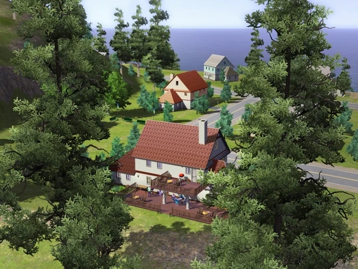
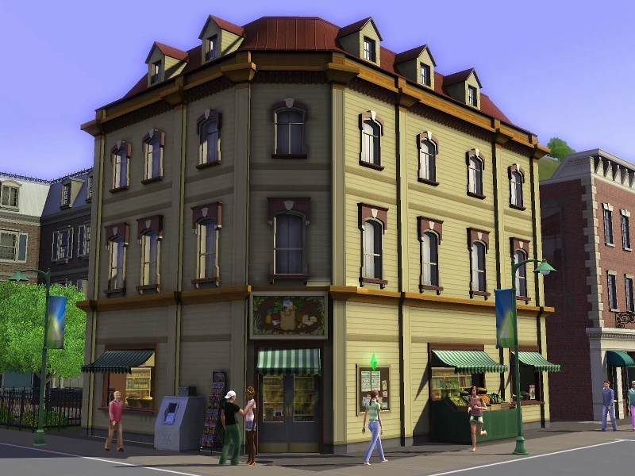
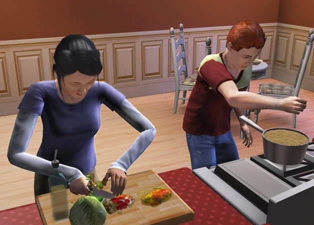
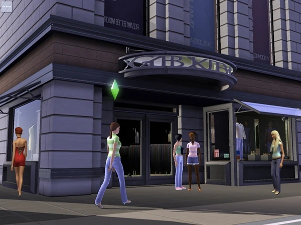
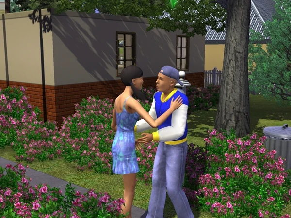
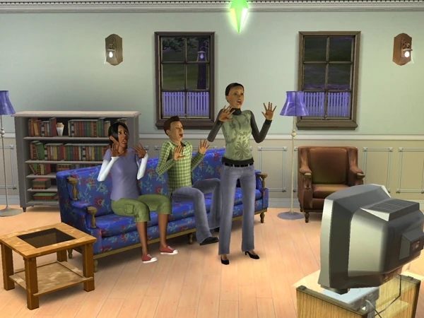

About TS3 and Screenshots
The Sims 3 keeps many of the innovations introduced by its predecessor, but adds several new features. The Sims 3 is the first game to feature an open-world concept: players are no longer limited to having a single lot loaded at a time, and Sims are able to move about and explore an entire town without triggering a loading screen. The Sims 3 features robust customization options through an expanded build mode and Create a Sim. The Sims 3 also introduces the Create a Style tool to the series, which allows players to change the patterns and colors of objects and clothing, and copy styles between different objects.
     